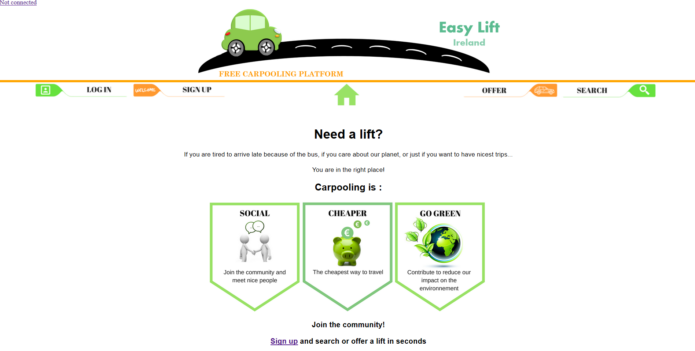
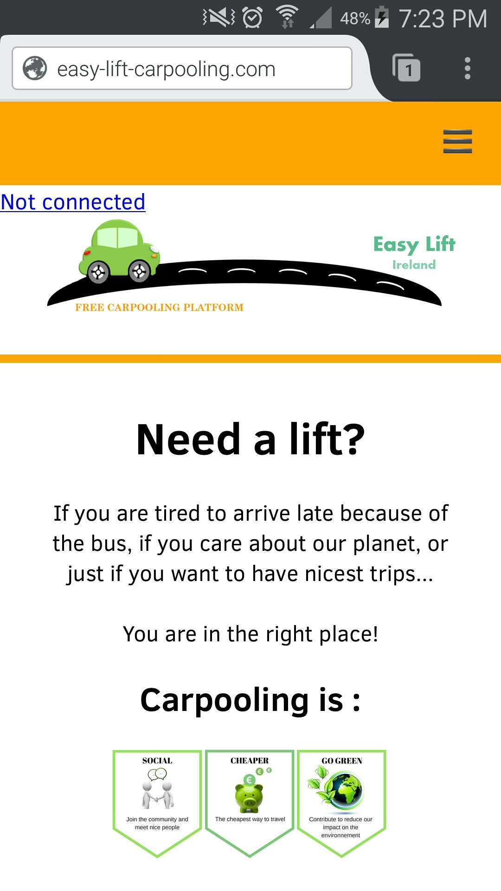
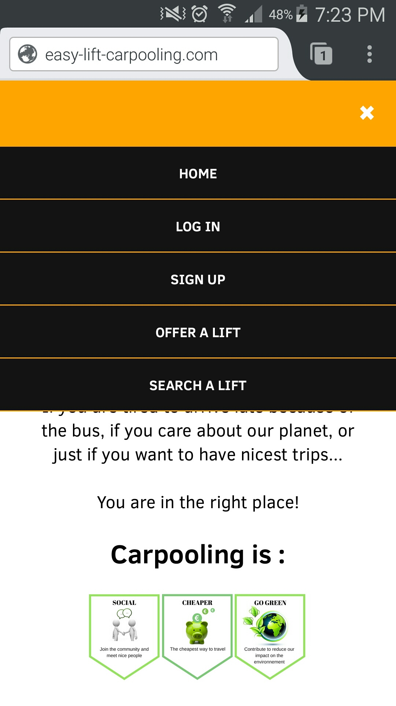

Les fonctionnalités
Mon but était de fournir une plateforme web sur laquelle les utilisateurs pourraient proposer des trajets (lifts) et être mis en relations avec d'autres personnes dans le but de réduire leur frais de transports. Le site devait donc inclure les éléments suivants:
Un système de comptes utilisateurs, incluant:
- Inscription avec vérification du mail
- Login / Déconnexion
- Zone membre (Avatar, infos personnelles, adresses pré-enregistrées etc
- Messagerie
Un système de création et de recherche d'offres
- Enregistrée une offre dans la BDD
- Rechercher les offres suivans des critères de dates et de géolocalisation
- Réponses aux offres
Les technologies utilisées
A partir de mon cahier des charges ci-dessus j'ai choisi d'utiliser les langages classiques du Web pour le site, HTTML CSS et Javascript. Pour certaines parties du Javascript mon choix c'est porté sur le Framework Jquery et en particulier la partie "Jquery UI", qui offre des solutions interessante et rapide à implémenter.
Le projet devait inclure un système de gestion de base de données ainsi qu'un langage serveur pour intéragir avec la BDD. J'ai réalisé cette partie avec PHP et MySQL.
Le developpement à été d'abord réalisé en local, d'abord grace au logiciel LAMP, puis WAMP avant d'être mis en ligne.
Le design du site
Le design est épuré, pour une navigation simple et claire.
Les principales fonctions nous sautent aux yeux et on sait instinctivement comment l'utiliser:

Design responsive et compatible mobile
Réalisé avec les medias queries de CSS3
 